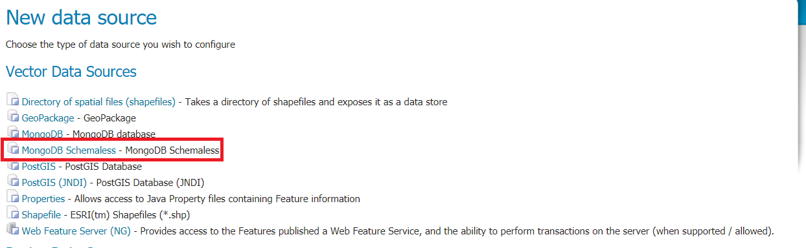

Installing the Schemaless Mongo module¶
Download geoserver-2.22.4-mongodb-schemaless-plugin.zip nightly GeoServer community module.
Warning
Verify that the version number in the filename corresponds to the version of GeoServer you are running (for example geoserver-2.22.4-schemaless-features-plugin.zip above).
Extract the contents of the archive into the
WEB-INF/libdirectory of the GeoServer installation.On restart the
MongoDB Schemalessvector source option will be available from theNew Data Sourcepage:

Previous: Schemaless Features Plugin